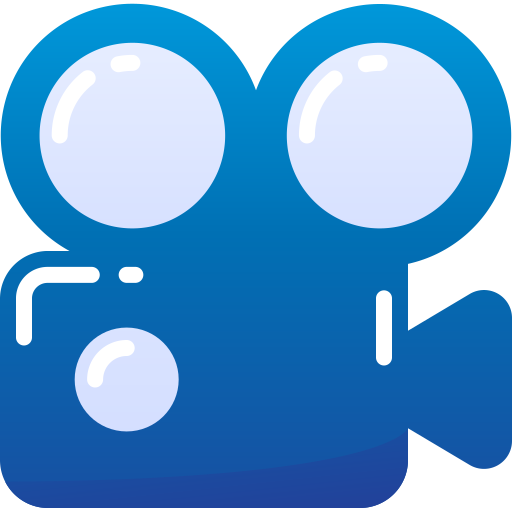
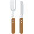
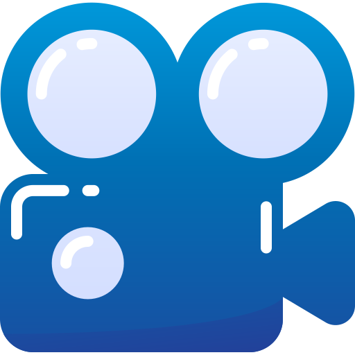
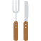

Je m'appelle Achraf Abbassi j'ai 22 ans et je suis un technicien supérieur en Electromécanique et Systèmes Automatisés marocain.
Je suis passionné par les nouvelles technologies surtout les véhicules embarqués, d'une formation approfondie en électronique et traitement de signal et comportement des Systèmes. Enthousiaste et patient et à la recherche de concrétiser mes connaissances théoriques en Système Embarquée.
Grâce à mes différentes expériences, j'ai pu développer ces dernières années des compétences en matière de:
Système temps réel & embarqués.
J'ai également développé des soft skills telles que:
La capacité d'apprentissage, la capacité d'adaptation.
- Etude et automatisation des trémies
- Programmation des entrées et des sorties analogiques
- Utilisation et programmation des blocs de régulation de RsLogix
- Programmation de la régulation sur un process reel
- Supervision du process et de la boucle de régulation avec RsView32
- Réaliser l’interface de supervision de la boucle de régulation
- Réaliser la commande du process depuis l’interface de supervision
- Afficher les courbes des informations analogiques
- Choix de variateur de vitesse
- Paramétrage, câblage et mise en service d’un variateur de vitesse
- Simatic step7 : diagnostic, configuration et programmation des API siemens
- WIN CC explorer : développement des interfaces de supervision des process industriels
- Câblage électrique des cartes E/S DES API S7 300
- Etude des MCC
- Etude des MAS
- Bobinage des moteurs électrique
Option: Instrumentation et systèmes
Option: Electricité d’Entretien Industriel
Electromécanique et Systèmes Automatisés
Option: Sciences et Technologies Électriques
- - Automates programmable
- - Commandes électriques et électroniques des machines électriques
- - Régulation PID
Gestion :
- - Numérique et analogique.
- - Réalisation des cartes électroniques.
- - Langages de programmation: C, C++
- - Plateformes embarquées: Arduino, Pic (16F...).
Électronique :
- - Microsoft Office.
- - RS Logix, Step7, LabVIEW, Matlab, ISIS Proteus.
- - Connaissance générale des différents systèmes d’exploitation usuels (Windows et Linux)
- - Détecter et diagnostiquer les problèmes dans les systems d’exploitation
Informatiques :
 


